ABOUT US
Who Are We?
We have a deep understanding of cryptocurrency principles, mastery of cryptocurrency development technologies, and over a decade of cryptocurrency trading experience. We are fully aware of the concerns of current and potential cryptocurrency investors, as well as the issues they want us to address: 1. What exactly is cryptocurrency? 2. Which wallet is the safest? 3. How to securely protect private keys without fail? 4. How to buy and sell cryptocurrency? ...
We are here to solve these problems, eliminating all your doubts so you can confidently invest in cryptocurrency and reap the benefits of its year-after-year value surge.
What Have We Done?
We have developed an open offline cryptocurrency wallet that meticulously demonstrates every detail of wallet creation and transaction initiation, ensuring you fully understand and control each step. Yes, having complete control yourself guarantees foolproof security! No reliance on cryptocurrency trading platforms—where your private keys are exposed—nor on existing cryptocurrency wallets, which obscure details and may contain backdoors.
Our offline cryptocurrency wallet is fully open-source, with transparent and publicly available code. Everyone can inspect the source code, so you can use it with complete confidence.
How to Use the Open Offline Wallet?
There are multiple methods.
Method 1: Click the wallet icon in the top-right corner of this website to open the offline wallet site. You can familiarize yourself with the demo operations there, but it is not recommended for actual use.
Method 2: Click the wallet icon in the top-right corner of this website to open the offline wallet site, then switch your browser to offline mode or physically disconnect from the internet. This makes it safer for actual use, as private keys cannot be leaked online.
Method 3: Download the offline wallet to your local hard drive from the download page. You can then open the page offline to perform wallet and transaction operations securely.
For safe operation methods, continue browsing the "Introduction" page.
DOCUMENT
INTRODUCTION
Important Notes
(1). Please use Firefox browser. You can download and install the enterprise version Firefox-ESR here. Firefox is open-source software, making it extremely difficult to contain backdoors.
(2). Always use Firefox's Private Window (launch by pressing Ctrl+Shift+P after starting Firefox). All browsing traces will be destroyed after closing the Private Window, ensuring your private keys remain absolutely secure.
(3). When generating wallets, recovering wallets, or signing transactions, always disconnect the browser from the internet (Press Alt key, then click "File" in the top-left corner, and select "Work Offline"). This guarantees your private keys cannot be leaked through network transmission.
(4). When copying and pasting private keys, use the three-segment method: First copy-paste one segment, then manually type the next few characters, and finally copy-paste the remaining characters. This prevents clipboard-monitoring spyware from stealing your complete private key. Reference example below:

1. Trading Introduction
Let's begin with a story. John saved some money after years of work but found no good investment opportunities domestically. "At the very least, I should preserve the value of my hard-earned money," John pondered, ultimately deciding to invest all his savings in cryptocurrency. Hearing that one Bitcoin could buy an apartment in a second-tier city within five years, he chose to purchase Bitcoin.
First, John needed a Bitcoin wallet. He registered an account on a cryptocurrency exchange, which automatically provided him with an online Bitcoin wallet (let's call it Wallet A), and later acquired an offline wallet (Wallet B). John bought Bitcoin through Wallet A and transferred his holdings to Wallet B once they reached a certain value (say, $30,000 equivalent), since Wallet A on a third-party platform was less secure than Wallet B which only he controlled. When selling Bitcoin, he would first transfer from Wallet B back to Wallet A before selling on the platform. Beyond online trading, peer-to-peer transactions were another option - like when John bought Bitcoin directly from acquaintance Jack via WeChat Pay, with Jack sending the coins straight to John's Wallet B.
Through this website, you can not only obtain Wallet B but also learn how to: send coins peer-to-peer, find where to get Wallet A, locate local cryptocurrency sellers, and more...
In China, investing in cryptocurrencies is one of the best ways for the poor to become rich. By late 2024, one Bitcoin was worth $100,000 - enough to buy an apartment in third-tier cities. We're confident that in five years it'll buy homes in second-tier cities, and in ten years, first-tier cities! Excited? If so, keep reading.
So how exactly do you trade cryptocurrency? Stay tuned for our next chapter... just kidding!
First, you'll need at least one cryptocurrency wallet with its unique address. When buying coins, you'd provide this address saying "Please send coins here!" The seller might cautiously reply "Triple-check this address - wrong transfers are your responsibility!" After repeatedly verifying, you'd confirm "Address is correct, don't worry bro!" After transfer, you can check receipt on blockchain explorers like https://blockchair.com/.
As you accumulate coins and watch prices soar daily, you'll calculate your growing wealth. Gradually escaping your underdog status, one day you'll finally make it - perhaps exclaiming: "Damn, I love this crazy world! Let's toast to our mortal lives!"
How to actually buy cryptocurrency? Patience... Imagine approaching a mysterious cabin on a dark, windy night... just kidding again!
Your wallet contains a private key. When selling coins, you'll initiate a transfer transaction signed with this private key, then broadcast the signed transaction to the network. Miners will include it in a block - usually completing within minutes. Higher transaction fees (paid in crypto, not actual dollars) grant priority. Currently miners care more about block rewards than fees. You set the fee (typically under $1 equivalent) - unrelated to transfer amount. I once paid just $0.40 equivalent (about 400 satoshis at 100,000 satoshi/$1) for a speedy transaction. Example transaction data: Recipient's address: xxxxx, Amount: 30,000,000 satoshis (0.3 BTC), Fee: 1,000 satoshis.
Addresses derive from private keys but cannot reverse-engineer them. Never share your private key - it's the sole access to spend your coins!
How to get a wallet? See "Wallet Management" below. How to initiate transactions? Click "Offline Signing" and "Broadcast Transaction".
2. Cryptocurrency Wallets
2.1 Private Keys
A private key IS your cryptocurrency wallet! Essentially, it's a 256-bit random binary number. Imagine flipping a coin where heads=1 and tails=0 - if you record 256 consecutive flips, you've created a valid private key, like this example:
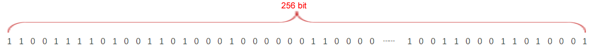I actually tested this coin-flip method myself, generating this binary sequence: 1100111101001101000100000011000011111110110011100001000001110001101101110011001001000110011110010011110100000110110100111101000010001110101011010011100001010100100000011110111000101000110010111111011110110010001010000101100101110111001001111001100011010001.
Since 256-bit binary is hard to remember, we convert it to hexadecimal. My coin-flip key becomes: cf4d1030fece1071b73246793d06d3d08ead385481ee28cbf7b22859772798d1. "Seriously? That's still impossible to memorize!" "Dude, just write it down!"
Written on paper, it's a paper wallet; memorized, it's a brain wallet; stored digitally, an electronic wallet. Both Bitcoin and Ethereum use 256-bit private keys, meaning one key could technically control both assets - but I strongly advise against this. If you lose the key, game over for all associated coins. If compromised, all assets are at risk.
Bitcoin experts recommend: Use a unique private key for every incoming transaction! Receive 3 BTC from John? Use key X. Get 5 BTC from Jack? Use key Y. Wang Er sending coins? Generate another new key. My practical advice: Follow this for large transactions, but use fewer keys for small amounts to avoid management headaches.
For easier wallet integration, Bitcoin converts hexadecimal keys to Base58-encoded WIF (Wallet Import Format). My coin-flip key in WIF becomes: L4AgDeoTPbdRd4S7X9UhXaNtyxZhDuj7EoUxPUndDYkvfmHjR8Cd. The binary, hexadecimal, and WIF formats are interchangeable. Ethereum only uses hexadecimal format. Important note: Hexadecimal is case-insensitive, but WIF is CASE-SENSITIVE!
NEVER share your private key - it should be known ONLY to you! (Well... maybe share with family as contingency planning, unless you want your crypto to die with you... just saying.)
In practice, we generate keys programmatically rather than coin-flipping. For deeper exploration of private keys, check out my new book "Cryptocurrency Security in Practice" available on my personal site (https://www.veryopen.org).
2.2 Addresses
A wallet address is derived from a public key, which in turn is generated from a private key. However, it's impossible to reverse-engineer the public key from an address or deduce the private key from a public key. You can freely share your address with others to receive cryptocurrency, similar to providing your shipping address for online purchases. Different cryptocurrencies use different methods to derive addresses from private keys, resulting in distinct address formats. For example, Bitcoin and Ethereum addresses generated from the same private key will be completely different - a Bitcoin address cannot receive Ether, and vice versa. Sending coins to the wrong address type will result in permanent loss!
Even within the same cryptocurrency, multiple address types may emerge over time. Bitcoin currently has several address types in chronological order: P2PK, P2PKH, P2SH, P2WPKH, and P2TR (introduced in 2021). P2WPKH is currently the most popular due to smaller transaction data size and lower fees. P2SH and P2TR support multisignature transactions, ideal for organizational use cases requiring multiple approvals - for example, a company requiring signatures from the CEO, CFO, and accounting manager to authorize payments.
The same private key can generate all address types. For instance, I can derive all Bitcoin address formats from one private key. When transacting, I provide the most advanced address type the recipient's wallet supports. If John's wallet handles P2WPKH, P2SH, and P2PKH, I'll share my P2WPKH address. For Jack's wallet that only supports P2PKH and P2PK, I'd provide the P2PKH address instead. Older wallets may not support newer address types.
Example Bitcoin addresses derived from my earlier coin-flip private key (L4AgDeoTPbdRd4S7X9UhXaNtyxZhDuj7EoUxPUndDYkvfmHjR8Cd), generated using our open offline wallet's "Bitcoin > Wallet Management > Derive Public Key and Address" tool:
P2SH address: 35SbZDs5biwdSFFUTR5GTQSH2fkDX2GqQ8
P2WPKH address: bc1qll89rqfmzllnyd9cnzy8vex9jueqv86y6587wg
P2WSH address: bc1q0lsk5wd7kqr053lyzxmcdy2a07a7ntju4rjjwftutqsahg6u2gfqu6tp6v
P2TR address: bc1pgp2szey33f8eaqxd5hlulhmhd6dh8fz90zdgftr0var5jcs4vypsx5u8f6
I've omitted P2PK addresses as they're obsolete. P2PKH and P2SH addresses use Base58 encoding with case-sensitive characters, while the last three types use Bech32 encoding (all lowercase).
Ethereum uses a single address format like 0x2e8681f8e38726D6C99009A4d724651Ff611fB27. Ethereum Name Service (ENS) - similar to DNS for websites - maps human-readable names (e.g., abc.eth) to Ethereum addresses. Instead of sharing complex addresses, you can provide your ENS domain (e.g., "Send to abc.eth"). Register your ENS domain at https://app.ens.domains/ (detailed instructions in my book "Cryptocurrency Security in Practice"). As Ethereum becomes more widely adopted, short ENS domains may become valuable digital assets.
2.3 Wallet Balance
Ethereum has a concept of account balance, but Bitcoin doesn't maintain balances in the traditional sense. The "balance" shown in Bitcoin wallet apps is dynamically calculated - it's the sum of all unspent transaction outputs (UTXOs) you've received. To better understand how this works, let's examine an example:
Suppose your address has received two transactions: 1 BTC from John and 0.5 BTC from Jack, making your wallet balance 1.5 BTC. Now you want to send 0.7 BTC to Alice. This would require spending John's original 1 BTC transaction. You'd create a transaction with these details:
• Output 1: Send 70,000,000 satoshis (0.7 BTC) to Alice
• Output 2: Return 29,999,000 satoshis (0.29999 BTC) to yourself
• Transaction fee: 1,000 satoshis
After signing this transaction with your private key and broadcasting it, John's original transaction is marked as spent. Your wallet now shows a new balance of 0.79999 BTC (Jack's 0.5 BTC plus your 0.29999 BTC change).
Could you have spent Jack's 0.5 BTC instead? No, because it's insufficient. However, you could combine both inputs (1.5 BTC total) and send the difference (0.79999 BTC) back to yourself (typically to a different address for fund consolidation).
In summary, a Bitcoin wallet balance is simply the sum of all unspent transaction outputs (UTXOs) associated with your addresses.
3. Offline Transaction Signing
All cryptocurrency transactions must be digitally signed before being broadcast to the network. Miners verify these signatures before including transactions in blocks - unsigned or invalid transactions are immediately rejected. To create a valid transaction, you must specify:
For Bitcoin:
(2) Recipient addresses and amounts (Outputs)
(3) Where to send any remaining change
The fundamental equation is: Total Inputs = Total Outputs + Transaction Fee
For Ethereum (which uses account balances):
(2) Amount to send
(3) Willingness to pay gas fee
Since signing requires your private key, online signing methods (like exchange platforms or mobile wallets) risk private key exposure. Our open offline wallet allows secure signing in air-gapped environments, ensuring absolute private key protection!
4. Private Key Management
Given the critical importance of private keys, their secure management remains a paramount concern for all cryptocurrency users. A forgotten private key means permanent loss of assets, while a compromised private key equals stolen funds.
4.1 Private Key Encryption
To prevent theft, private keys can be encrypted - creating ciphertext private keys. Even if someone obtains the encrypted version, without the decryption password they cannot access the actual private key or initiate transactions (as miners reject all unsigned transactions). The encryption password (similar to online banking passwords) typically consists of 7-8 memorable characters. The encrypted private key can then be safely stored on paper, computers, USB drives, cloud storage, or email.
Warning: Simple passwords (like "123456") create significant risk, especially for cloud-stored keys. We recommend passwords with:
• Combination of numbers, lowercase letters
• Special characters (.,%@#*&!;-)
Our Open Offline Wallet's "Private Key Protection" tool handles encryption/decryption and supports direct signing with encrypted private keys (temporarily decrypting during signing).
4.2 HD Wallet
An HD wallet can generate a large number of private keys and is easy to remember and manage. It fulfills one of the recommendations in "Best Practices for Cryptocurrency Investment": use a separate private key for each transaction. As the number of transactions increases, the number of private keys used also rises significantly. Encrypting each private key individually becomes time-consuming and labor-intensive, and this is where HD wallets come into play. An HD wallet, or Hierarchical Deterministic wallet, is based on the core idea of deriving a large number of wallets from a set of words (seed phrase) according to a wallet path, as illustrated below.
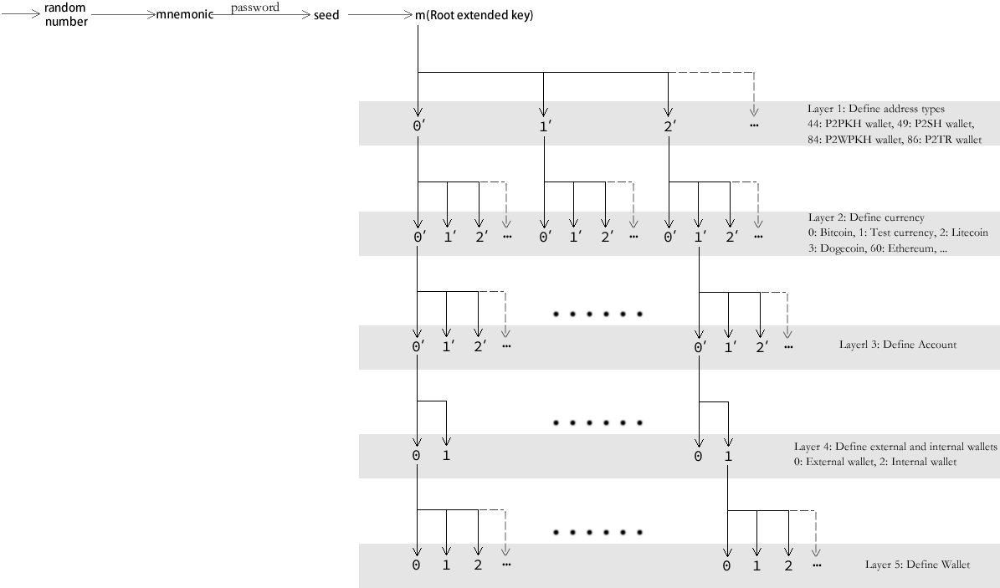
Once the random number is determined, the mnemonic phrase is fixed. The mnemonic phrase + password uniquely determines the seed, and the seed uniquely determines the root private key (m). From there, the wallet path determines each private key. Whether a password is used or not, and what password is used, the seed derived from the same mnemonic phrase will be entirely different. The path from the root (m) to the 5th level is referred to as the Bitcoin HD wallet path, with the following format:
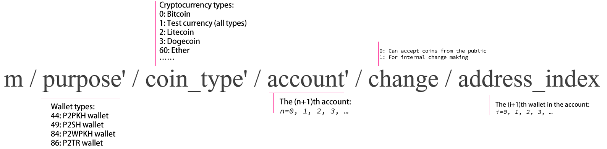
Wallet paths exceeding 5 levels are non-standard and may not be supported by many wallet apps. However, our "Open Offline Wallet" supports non-standard paths. The standard wallet path format for Bitcoin's P2WPKH type is "m/84'/0'/i'/x/j," while Ethereum's HD wallet path format is "m/44'/60'/i'/x/j." Here, the values of i and j range from [0, 2147483647]. When x = 0, it represents the (j+1)th external wallet of the (i+1)th account; when x = 1, it represents the (j+1)th internal wallet of the (i+1)th account. External wallet addresses are public, allowing others to send coins to them, while internal wallet addresses are kept private and known only to the owner. For example, the Bitcoin wallet path "m/84'/0'/1'/0/3" refers to the 4th external wallet of the 2nd account, while "m/84'/0'/1'/1/3" refers to the 4th internal wallet of the 2nd account. Since cryptocurrencies currently exist in a legal gray area in almost all countries, many cryptocurrency investors prefer not to expose their privacy, even avoiding publicizing wallet addresses. A common practice is to publish an external wallet address and transfer accumulated coins to an internal wallet once a certain amount is reached, while keeping only a small amount in the external wallet. As previously mentioned, a private key is equivalent to a wallet. Now, we only need to remember a set of words, known as the mnemonic phrase. The number of words in a mnemonic phrase can be 12, 15, 18, 21, or 24. The more words there are, the harder it is for others to guess, making your HD wallet more secure. For example, "asset curve boss naive trade never sister evoke what lunch glory update course acquire first mistake solve bullet pipe practice husband round glow wing" is a 24-word mnemonic phrase. Mnemonic phrases cannot be manually specified by users because the last word contains a checksum of the preceding words. This open offline wallet provides a feature to customize mnemonic phrases (under "Tools > Custom Mnemonic"), but it is not advisable to specify too few words, as this makes it easier for others to guess. If you want to understand the mechanism behind mnemonic phrase generation, please refer to our book "Practical Cryptocurrency Security Trading." When deriving an account from a mnemonic phrase, a password can be added, ensuring that even if someone obtains your mnemonic phrase, they cannot access your accounts without the password.
When generating an HD wallet, you need to specify the wallet path. To restore an HD wallet, you must input the mnemonic phrase and wallet path. If a password was set, it must also be provided. For example, two years ago, I used the mnemonic phrase "poem crater dove table knock moment raccoon scrub color raccoon figure stumble" with the password "A1b2C3&" to derive a wallet with the path "m/84'/0'/5'/0/2" and had Zhang San transfer 3 Bitcoins to it. At the time, I noted the following on paper: "poem crater dove table knock moment raccoon scrub color raccoon figure stumble | m/84'/0'/5'/0/2," while the password was one I frequently used and memorized.
Now, if you want to spend these funds, you must recover the private key from the mnemonic phrase. To do this, go to "Bitcoin > Wallet Management > Create/Restore Wallet" in the open offline wallet, enter the mnemonic phrase "poem crater dove table knock moment raccoon scrub color raccoon figure stumble," the password "A1b2C3&," and the wallet path "m/84'/0'/5'/0/2." Then click the "Restore Wallet" button to reveal the private key "KyPwsvn7cPoCoyujACRUz4m5SsH9tYaYv6JTm4YAu1XBMfH1fs17." Once you have the private key, you can initiate and sign transactions.
You might think, "Why not just memorize the private key instead of restoring it from the mnemonic phrase every time?" That's correct—if a wallet is used frequently, memorizing the private key separately is a good idea, as frequent use of the mnemonic phrase increases the risk of exposure. The mnemonic phrase is the lifeline of all your wallets. However, we recommend encrypting the private key before memorizing it.
5. Best Practices
These are purely our summarized experiences and do not represent the optimal or the only methods. They are provided for reference only.
(1) For ordinary users who only buy/sell cryptocurrencies with low transaction frequency (rarely exceeding 10 times a year) and whose crypto assets are below one million, we recommend using just one private key. Protect the private key with a password, then derive both a Bitcoin P2WPKH and P2PKH address from it, as well as an Ethereum address.
(2) For users with crypto assets between one million and ten million and low transaction frequency, we recommend using a single mnemonic phrase (containing 18 or more words) protected by a password. Use this mnemonic to derive a Bitcoin HD wallet with an external wallet path like "m/84'/0'/i'/0/j" (i.e., the (j+1)th wallet in the (i+1)th account). Only create 1-2 accounts, with 2-3 wallets per account, along with a few internal wallets. Additionally, set up a few Ethereum external wallets with paths like "m/44'/60'/i'/0/j" (where i and j have the same meaning as in Bitcoin) and a few Ethereum internal wallets with paths like "m/44'/60'/i'/1/j".
(3) For heavy cryptocurrency investors with assets exceeding tens of millions, hundreds of millions, or even billions, use a separate mnemonic phrase (containing 24 words) for each cryptocurrency. Protect each mnemonic with a strong password (at least 15 characters long, including uppercase/lowercase letters, numbers, and special symbols). Use 3-5 accounts per cryptocurrency, with multiple external and internal wallets in each. Plan account and wallet usage carefully—each large transaction (over ten million) should use a dedicated wallet for receiving funds. The private keys of these wallets must be encrypted, and signing transactions should be done using the encrypted private key and password (temporarily decrypting the private key for signing).
DEALING BITCOIN
1. Bitcoin Wallet Management
A private key constitutes a complete wallet - essentially a 256-bit random binary number that generates wallet addresses. As Bitcoin was the pioneer cryptocurrency, its initial design had limitations that led to multiple upgrades and forks, resulting in various address types:
- P2PK: Original Pay-to-Public-Key
- P2PKH: Pay-to-Public-Key-Hash
- P2WPKH: SegWit addresses (most popular currently)
- P2SH/P2WSH: Multi-signature addresses
- P2TR: Latest Taproot addresses
The same private key can generate all address types, and spending from any of them requires signing with that single private key. Currently, P2WPKH addresses dominate due to lower transaction fees and enhanced privacy.
Our Open Offline Wallet creates Hierarchical Deterministic (HD) wallets - the most advanced Bitcoin wallet system. A single mnemonic phrase can generate millions of accounts, each capable of producing millions of wallets.
1.1 Create New Wallet
Navigate to "Bitcoin" > "Wallet Management" > "Create/Recover Wallet" in the Open Offline Wallet. Click "Create New Wallet" to generate a default wallet (path: m/84'/0'/0'/0/0) with a 24-word English mnemonic phrase (no password protection).

Customization options include:
• Mnemonic length (12/15/18/21/24 words)
• Language (English recommended for compatibility)
• Optional password protection
• Custom HD wallet path
Supported languages: English, Simplified Chinese, Traditional Chinese, Japanese, Spanish, French, Italian, Korean, Portuguese, and Czech. Longer mnemonics provide greater security through increased entropy.
After creation, click "Show More Info" to view:
• Seed
• Root extended private key (xprv)
• Account extended keys (useful for importing to other wallets)
Best Practice:
1. Create an external receiving wallet (e.g., m/84'/0'/0'/0/0)
2. Establish an internal wallet in the same account (e.g., m/84'/0'/0'/1/666)
3. Regularly sweep funds from external to internal wallet
4. Maintain minimal balances in external wallets
1.2 Wallet Recovery
Three recovery methods (priority order):
- Root Extended Private Key: Highest priority if provided
- Seed: Used if no xprv provided
- Mnemonic + Password: Required if wallet was password-protected
Simply enter the required information along with the wallet path and click "Recover Wallet". The system automatically follows the priority hierarchy if multiple recovery methods are entered simultaneously.
1.3 Deriving Public Key and Wallet Address from Private Key
In the offline wallet, click "Bitcoin," "Wallet Management," and then "Derive Public Key and Wallet Address from Private Key" to open the interface shown below. Enter the private key and click the "Confirm" button to derive the public key and address.
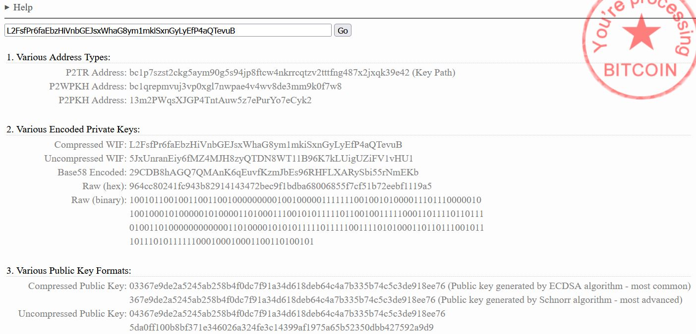
1.4 Generating a Multi-Signature Address
In the offline wallet, click "Bitcoin," "Wallet Management," and then "Derive Public Key and Wallet Address from Private Key" to open the interface shown below. P2SH, P2WSH, and P2TR-type addresses all support multi-signature—requiring signatures from multiple parties to spend funds. An "n-of-m multi-signature" means that at least n out of m signatures are required to spend the funds.
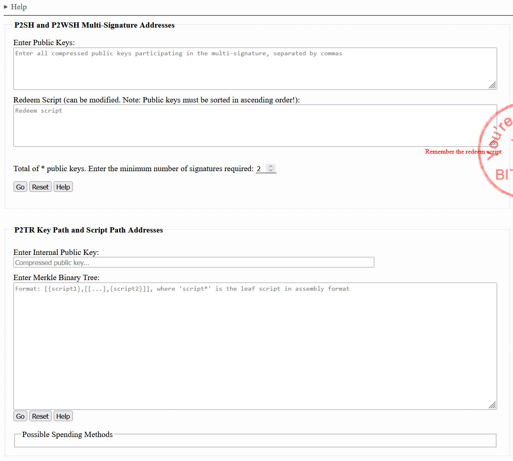For example, to generate a 2-of-3 multi-signature address for P2SH and P2WSH, assume the three public keys are 02770c8febd8c26aa31678f390fbd9df9840b2640cfbf8d3048af58ead89d150d1, 02c5e1f3dc9d9a23650710daa31cfc5faa055c4350fa94690936666a60c6a3e16d, and 02563ccbebd4747938ac6e6e6dfaea04dedac50f8db53f10de366bdc1a88157da6. The result is shown in the image below.
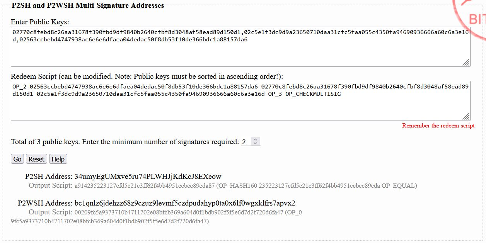Later, others can send coins to the addresses bc1qnlz6jdehzz68z9czuz9levmf5czdpudahyp0ta0x6lf0wgxklfrs7apvx2 or 34umyEgUMxve5ru74PLWHJjKdKcJ8Exeow. When spending UTXOs from these addresses, at least two signatures are required—either two or three private keys corresponding to the three public keys.
For instructions on generating a script-path address for a P2TR wallet, please refer to our book "Practical Guide to Secure Cryptocurrency Transactions." Examples will not be provided here.
1.5 Wallet Balance, UTXOs, and Transaction Details
You can query all UTXOs and the total balance based on a wallet address, or enter a transaction ID to check a specific transaction.
2. Bitcoin Transaction Broadcasting
Complete external transfer transactions here. In the offline wallet, click "Bitcoin," then "Broadcast Transaction" to open the page shown below.
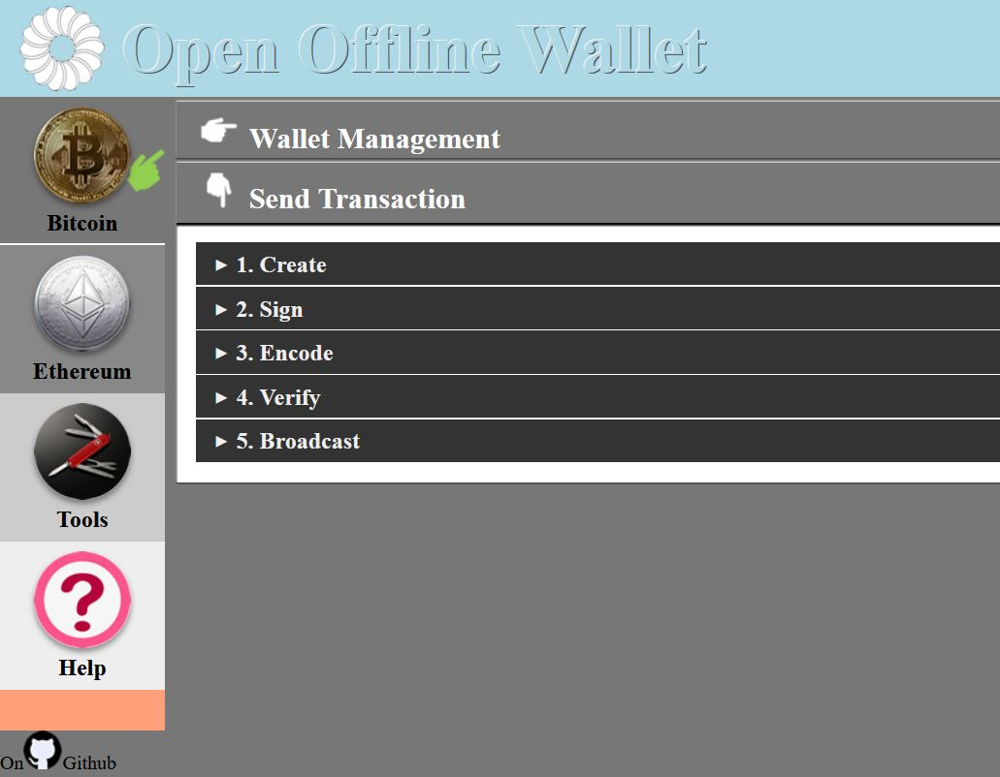The steps for broadcasting a transaction include: creating a transaction, signing the transaction, encoding the transaction into a hex string, decoding the hex string to verify the transaction, and finally broadcasting the transaction.
2.1 Creating a Transaction
Click "Bitcoin," "Broadcast Transaction," then "1. Create" to open the screen shown below.
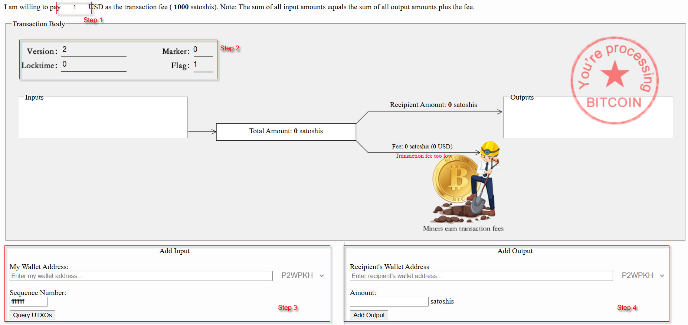Unless you understand the exact meanings of Version, Marker, Locktime, and Flag and truly need to modify them, do not change these parameters casually. You can specify the transaction fee yourself, typically between $3 and $5. Avoid setting it too low—if it's below $1, the transaction may take a long time to complete (several hours). Higher fees lead to faster confirmations, as miners prioritize transactions with higher fees. The difference between the total amount and the recipient's credited amount is the transaction fee.
A transfer transaction can have inputs from multiple wallet addresses and outputs to multiple wallet addresses. For more details, refer to "Practical Guide to Secure Cryptocurrency Transactions."
To permanently store information on the Bitcoin blockchain, select the "OP_RETURN" address type in the output section on the right. A dialog box will appear where you can enter the information to be stored (up to 80 characters). However, it is recommended to store data on the Ethereum blockchain instead, as the fees are lower and you can store up to 7,000 Chinese characters.
2.2 Signing
Click "Bitcoin," "Broadcast Transaction," then "2. Sign" to open the screen shown below.
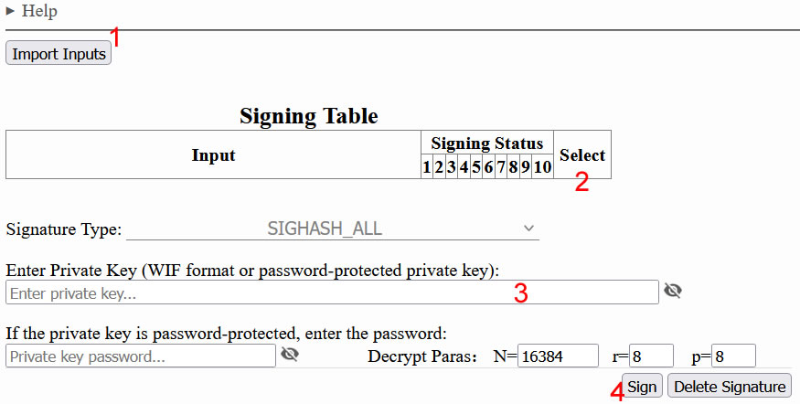Since signing requires a private key, ensure the browser is in offline mode. Copy the private key in segments. The private key used for signing must correspond to the UTXO of the input. The default signature type is SIGHASH_ALL—do not change it unless necessary. If using an encrypted private key, enter the password used for encryption along with the N, r, and p parameters, which correspond to "CPU/memory cost," "block size," and "parallelization" during encryption.
Note: A single private key can sign multiple inputs at once, and an input can be signed multiple times by different private keys. All inputs must be signed.
2.3 Encoding
This step converts the transaction into a Hex (hexadecimal format) string for subsequent decoding, verification, and broadcasting.
2.4 Verification
Decode the Hex-formatted transaction string back into its structured form to inspect each field. Key areas to verify include the recipient address, amount, output scripts, and transaction fee. Unlike traditional bank transfers, cryptocurrency transactions are irreversible if errors occur! Refer to the image below.
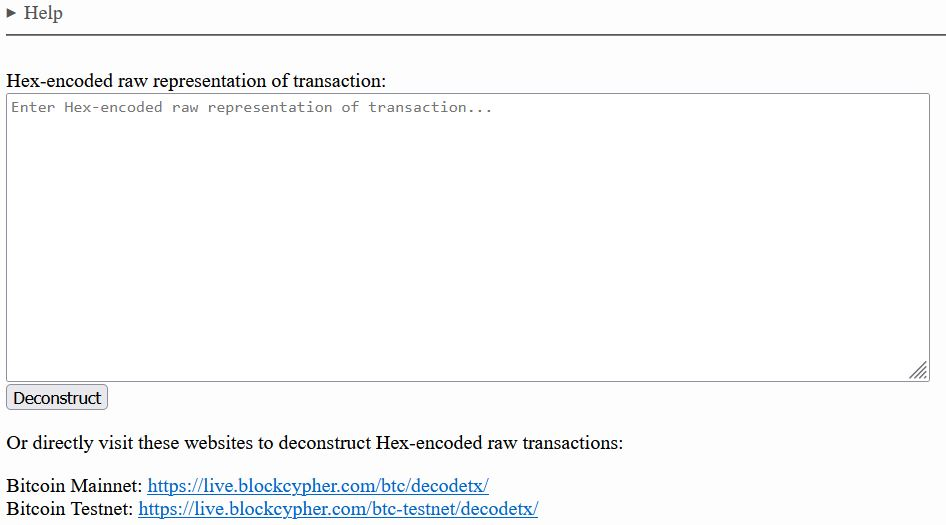After thorough verification, the transaction can be broadcast. Since this browser operates offline, you must copy the Hex string to an online browser for broadcasting. The following websites support transaction broadcasting: https://blockchair.com/broadcast, https://live.blockcypher.com/btc/pushtx/, https://www.blockchain.com/btc/pushtx. Alternatively, open the offline wallet in another browser, navigate to "Bitcoin" → "Broadcast Transaction" → "5. Broadcast". After broadcasting, check https://blockstream.info/ within minutes to confirm transaction completion.
DEALING ETHEREUM
1. Ethereum Wallet Management
Click "Ethereum" on the left sidebar, then select "Wallet Management" to access the interface shown below.
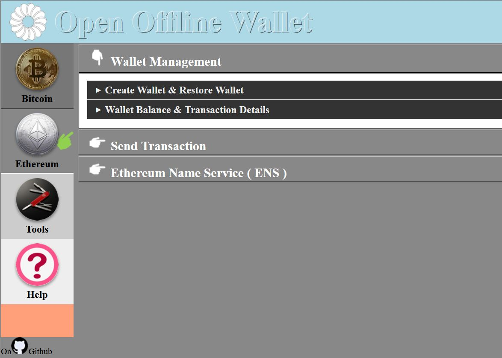1.1 Create/Restore Wallet
Click "Create/Restore Wallet" in the above image to enter Ethereum wallet management. Here, identical mnemonic phrases with different passwords will generate distinct wallets. You can restore an HD wallet from a mnemonic or derive public keys/addresses from existing private keys (whether encrypted or unencrypted). For example, clicking "Create New Ethereum Wallet" generates a wallet as shown below.
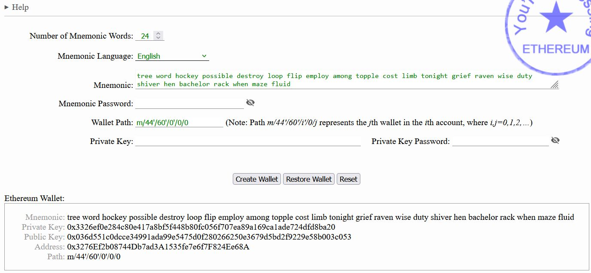1. Creating a wallet: - Specify the number of mnemonic words (minimum 12, maximum 24; more words enhance security). - Select the mnemonic language (e.g., English, Simplified Chinese). - A combination of "Mnemonic Phrase" + "Mnemonic Password" can derive multiple private keys (each key corresponds to one wallet). - Note: Different passwords with the same mnemonic yield different private keys—always use a password for mnemonic protection. - Wallet Path: A string like "m/44'/60'/i'/0/j…" indicates the (j+1)th wallet under the (i+1)th account (i, j ≥ 0). Only modify i and j or extend the path. - Example: Default path "m/44'/60'/0'/0/0" = 1st account’s 1st wallet; "m/44'/60'/0'/0/5" = 1st account’s 6th wallet. Avoid overly complex paths to prevent errors. - If a private key encryption password is set, the derived key will be encrypted. Signing later will require this password—do not forget it.
2. Restoring a wallet: - Method 1: Use the original mnemonic language, phrase, password, and wallet path to recover all private keys. - Method 2: Input a single private key (and its decryption password if encrypted) to restore the wallet address.
2. Ethereum Transaction Broadcasting
Navigate to "Ethereum" → "Broadcast Transaction" → "1. Create" to open the page below.
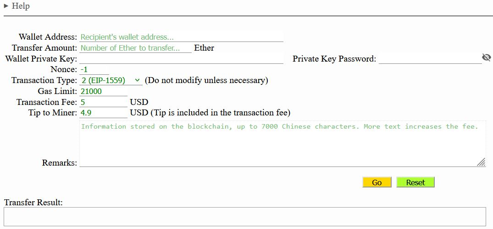The "Nonce" indicates the sequential count of outgoing transactions from the wallet (e.g., 0 for the first transaction, 1 for the second). If online, the nonce auto-populates; otherwise, manually enter it (ensure accuracy). Third-party tools can help query the current nonce. For advanced details, refer to Practical Guide to Secure Cryptocurrency Transactions.
TOOLS
In the offline wallet, click "Tools" on the left sidebar to access the page shown below.
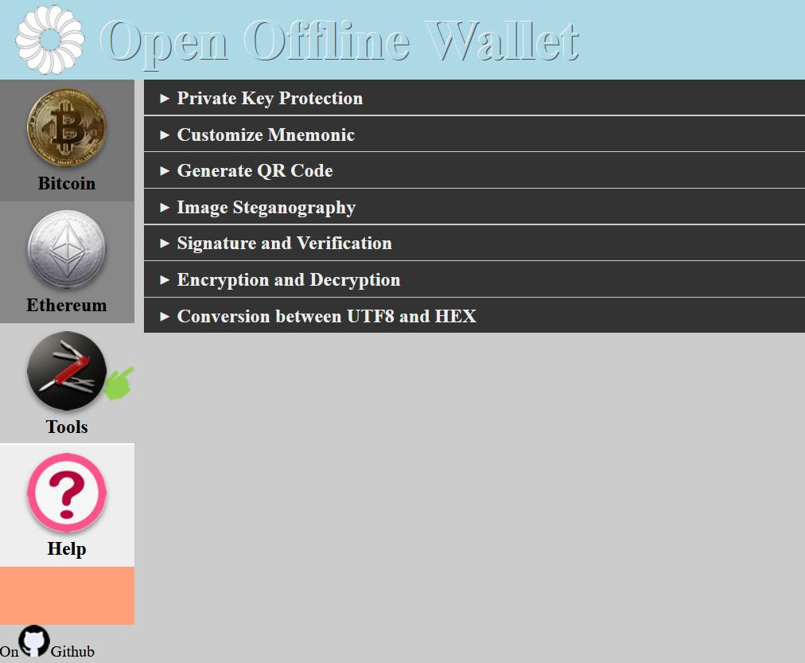
1. Private Key Encryption
We strongly recommend encrypting your private keys for protection. Encrypted private keys can be stored on your computer, but the password must never be stored alongside them—memorize it or write it down separately. The offline wallet supports direct signing with encrypted private keys, automatically decrypting them during the process. Click "Tools" → "Private Key Encryption" to open the interface below.
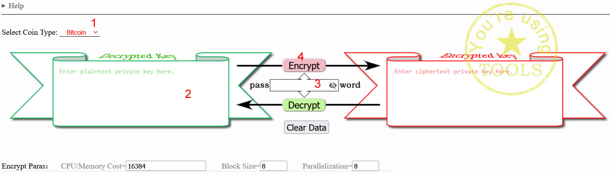This tool can encrypt plaintext private keys into ciphertext or decrypt ciphertext back to plaintext. Given the critical importance of private keys, encrypting them is highly advised. Even if someone obtains the encrypted key, they cannot sign transactions without the password. Remember: You must decrypt the key for each signing attempt, so never forget your password! When copying/pasting private keys, split them into segments (e.g., copy the first half, then the latter half, manually typing a few middle characters) to thwart clipboard spyware. Do not modify "CPU/Memory Cost," "Block Size," or "Parallelization" unless you fully understand their implications.
After encryption, always verify decryption works. The password, CPU/Memory Cost, Block Size, and Parallelization values must match exactly during both processes—and remember any modified parameters!
2. Custom Mnemonic Phrases
Mnemonic phrases can contain 12, 15, 18, 21, or 24 words—more words enhance security by reducing guessability. By design, mnemonics cannot be fully user-defined because the last word includes a checksum of prior words. Best practice is to let the system generate them randomly. However, our offline wallet allows partial customization: Users may specify some words (blue box in the image), while the system fills the rest. For example, to generate a 15-word Simplified Chinese mnemonic with partial customization, the result might be: "我 是 一 个 大 本 蛋 磁 定 亭 你 呢 叶 纺 途" (see below).
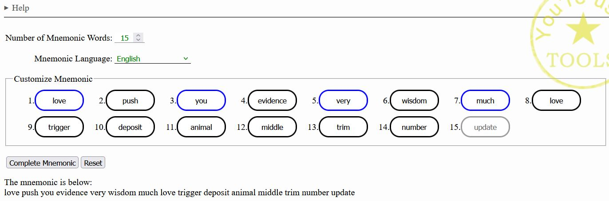
Mnemonic words are carefully curated, excluding obscure or easily confused terms (e.g., "笨" from "笨蛋"). English mnemonics offer broader compatibility; use them unless you have specific preferences.
Other tools (QR Code Generator, Image Steganography, Digital Signatures/Verification, Encryption/Decryption, UTF8-HEX Conversion) are straightforward and omitted here.
OPERATING ENVIRONMENT
Although our open-source offline cryptocurrency wallet is powerful and transparent in operation, it requires a browser to access and operate. This raises several security considerations: Which browser is the most secure? What operating system should the browser run on? What type of computer should the OS run on? Should the computer be connected to the internet? The solutions to these questions constitute the security environment for cryptocurrency transactions. While greater security is always preferable, higher security requirements demand more advanced IT expertise and incur higher costs. Therefore, we have carefully designed several security environments to suit different user needs - choose what fits your situation without blindly pursuing the highest security level.
If we rate security on a scale from 1 to 10 (with 10 being most secure), using public wallets and exchange platforms would rank about 3. Our Beginner Environment achieves level 5 security, Intermediate Environment reaches level 7, Advanced Environment achieves level 8, and our Ultimate Environment reaches level 9. For funds under $100,000, public wallets may be acceptable. For hundreds of thousands, Beginner Environment suffices. Millions warrant Intermediate Environment, while tens of millions require Advanced Environment. For larger sums, the Ultimate Environment is strongly recommended.
Beginner Environment
Overview
Use Firefox Enterprise Edition on your everyday computer in offline mode, opening the offline cryptocurrency wallet in a private window. Use a separate browser (e.g., Chrome, Edge) for online activities like research and transaction submission.
Detailed Steps
1. Computer Preparation
We recommend using a desktop or laptop rather than mobile devices (phones/tablets), as they're least secure. Purchase brand-name computers (Apple, HP, Dell, etc.) from overseas (including Hong Kong, Macau, Taiwan). Install original Windows OS (from Microsoft's official site: https://www.microsoft.com), macOS, or Linux. Avoid installing domestic Chinese software (QQ, WeChat, Sogou Input Method, etc.), as both hardware and software from China may contain backdoors. The optimal solution is building your own PC with components and installing Linux (Debian/Ubuntu) to eliminate potential hardware/OS backdoors and minimize malware risks.
Hardware and OS form the foundation - without secure foundations, complete security is unachievable.
2. Install Nginx
It is a good idea to enable a web server locally to limit the files that the browser can access. And NGINX is a small and powerful web server; for Windows, please download it from https://nginx.org/download/nginx-1.28.0.zip here, and then unzip it to the D drive, see the figure below.
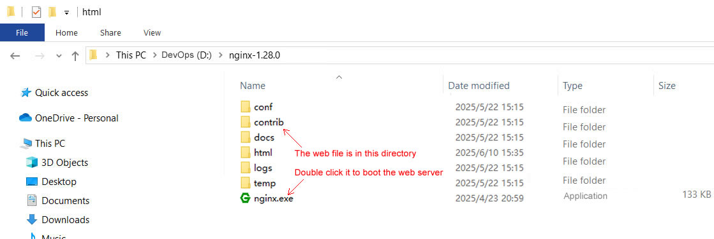Every time you turn on your computer, you have to double-click on the ngnix.exe programme in the picture above to start it.
3. Browser Setup
Strongly recommend Firefox (open-source, high security). Download Firefox ESR Enterprise Edition from: https://www.mozilla.org. Warning: Never download from third-party sites like firefox.com.cn (potential backdoors).
After installation, right-click the desktop icon 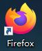, select "Properties," and append "--private-window http://localhost" to the Target field (see image). Change the icon. This ensures Firefox always launches in private mode (no history retention).
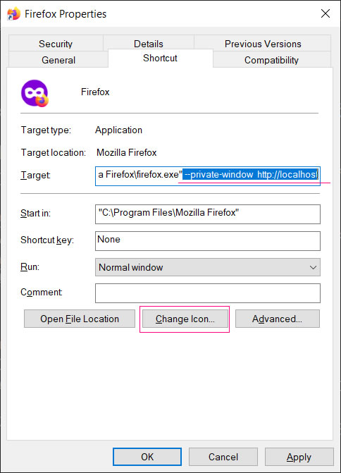Press Alt to show the menu bar, then select File > Work Offline (see image). Note: You must manually enable offline mode each session.
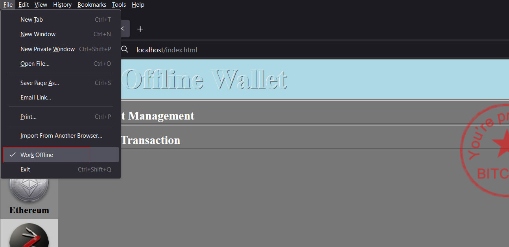Offline mode prevents private key leaks, while private windows erase all traces after closing. Use Edge/Chrome exclusively for online activities and transaction broadcasting.
4. Offline Wallet Setup
Download walletoffline.zip from the DOWNLOAD menu below, then extract to your D: drive (final structure shown).
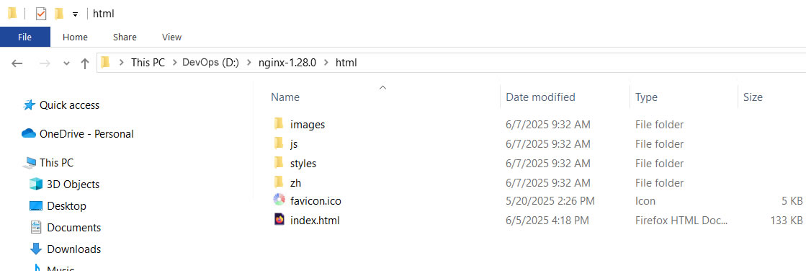Click on the Firefox icon on your computer's desktop to launch the browser, then you will open the Open Offline Wallet website. Refer to DOCUMENT section above for detail operational guidance.
Intermediate Environment
Overview
Install virtualization software (VirtualBox or VMware) on your work computer and create a virtual machine running Debian Linux. Configure Firefox to work offline within the VM for creating and signing cryptocurrency transactions. Install Chrome separately for broadcasting transactions and external communications. Compared to the beginner approach, this method eliminates potential backdoors, viruses, or spyware from other installed applications. Additionally, VMs are easily backed up and can be launched on other computers when needed.
Detailed Steps
1. Computer Preparation
Use a desktop or laptop rather than mobile devices (phones/tablets), as they're least secure. Purchase brand-name computers (Apple, HP, Dell, etc.) from overseas (including Hong Kong, Macau, Taiwan). Install original Windows OS (from Microsoft's official site: https://www.microsoft.com), macOS, or Linux. Avoid installing domestic Chinese software (QQ, WeChat, Sogou Input Method, etc.), as both hardware and software from China may contain backdoors. The optimal solution is building your own PC with components and installing Linux (Debian/Ubuntu) to eliminate potential hardware/OS backdoors and minimize malware risks.
Hardware and OS form the foundation - without secure foundations, complete security is unachievable.
2. Virtual Machine Setup
VMware Workstation 17.5 is now free for personal use but remains proprietary. VirtualBox is open-source but owned by Oracle, limiting its "freedom." VMware Workstation offers better stability, ease of use, and wider adoption.
Register at https://support.broadcom.com/ to download the latest version (currently VMware-workstation-full-17.6.3). Install and reboot. Press Ctrl+N to create a new VM after launching VMware.
Install Debian 12 in the VM (standard installation process), with two critical notes: (1) Create a 500MB partition and allocate remaining space to root (no swap); (2) Only install SSH server and standard system utilities.
After installation, run these commands to add the LightDM desktop:
cat >/etc/apt/sources.list <<EOF
deb http://deb.debian.org/debian bookworm main contrib non-free non-free-firmware
deb http://deb.debian.org/debian bookworm-updates main contrib non-free non-free-firmware
EOF
apt update -y
apt upgrade -y
apt install -y xorg
apt install -y --no-install-recommends xfce4
apt install lightdm -y
apt install -y fonts-wqy-microhei fonts-wqy-zenhei xfce4-terminal cryptsetup vim mousepad nginx
apt install -y firefox-esr --no-install-recommends
shutdown -r nowAfter reboot, log into the graphical desktop. Disable VM copy-paste functionality (Edit VM Settings > Options > Guest Isolation). Set up encrypted partition:
// Initialization:
apt-get install cryptsetup
cryptsetup luksFormat /dev/sda1# Set password
cryptsetup open /dev/sda1 encdisk
mkfs.ext4 /dev/mapper/encdisk
cryptsetup close encdisk
// Daily use:
cryptsetup open /dev/sda1 encdisk# Enter password
mount /dev/mapper/encdisk /opt/encrypt
// Unmount after use:
umount /opt/encrypt
cryptsetup close encdiskDisable command history:
echo "export HISTFILESIZE=0">>/etc/profile
echo "export HISTSIZE=0">>/etc/profile
history -cChange SSH default port from 22 to 7208:
vim /etc/ssh/sshd_config
……
Port 7208
……
systemctl restart sshConfigure firewall:
apt install firewalld -y
systemctl --now enable firewalld
firewall-cmd --set-target=DROP --permanent# Default deny policy
firewall-cmd --remove-service=ssh --permanent
firewall-cmd --add-port=7208/tcp --permanent
firewall-cmd --remove-forward --permanent# Disable forwarding
firewall-cmd --add-icmp-block-inversion --permanent# Disable ping
firewall-cmd --reload3. Offline Wallet Setup
Download walletoffline.zip from the DOWNLOAD section below and extract to the /var/www/html directory (result shown below).
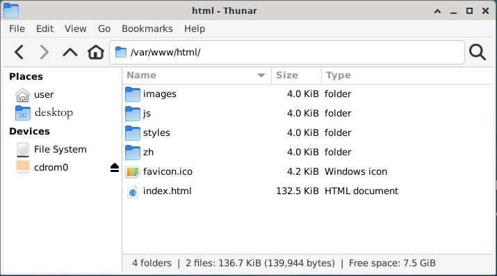
Run these commands to modify permissions (only root can make changes):
chown -R root:www-data /var/www/html
find /var/www/html -type d -exec chmod 750 {} \;
find /var/www/html -type f -exec chmod 640 {} \;
usermod -a -G www-data user4. Browser Setup
Install two browsers: Firefox for accessing the offline wallet and Chrome for internet access and transaction broadcasting. First install Firefox ESR (Extended Support Release) with:
apt install firefox-esr --no-install-recommendsCreate a desktop launcher that always starts in private mode with this command:
/usr/lib/firefox-esr/firefox-esr --private-window http://localhostDownload the latest Chrome .deb package from https://www.google.com/chrome and install:
dpkg -i google-chrome-stable_current_amd64.deb
apt -f install -yCreate a Chrome launcher that routes through a SOCKS5 proxy:
/usr/bin/google-chrome-stable --proxy-server="socks5://127.0.0.1:8080"5. SOCKS5 Proxy Setup
Create an SSH launcher on desktop with this command:
/usr/bin/ssh -C -N -D 8080 -i ~/rsa_4096 alice@xx.yy.zzz.xyzGenerate SSH key pair:
ssh-keygen -q -b 4096 -C "Socks5 VPN" -t rsa -f rsa_4096#Generate key pair
ssh-copy-id -i rsa_4096.pub alice@xx.yy.zzz.xyzAlways start the SOCKS5 proxy via SSH before using Chrome. After connecting, install MetaMask extension: Click the three-dot menu → "Extensions" → "Visit Chrome Web Store" → search and install MetaMask. Then create/import a wallet (refer to Practical Cryptocurrency Security for details).
6. Storing Sensitive Information
Store mnemonics, private keys, and other sensitive data in a file (e.g., cryptocurrency.txt), then encrypt and save to the encrypted partition:
gpg -c cryptocurrency.txt#Enter password twice (use strong complexity)
cryptsetup open /dev/sda1 encdisk#Enter partition password
mount /dev/mapper/encdisk /opt/encrypt
cp cryptocurrency.txt.gpg /opt/encdisk/
rm -rf cryptocurrency.txt7. Finalization
7.1 Disk Cleanup
Remove unnecessary files and zero out free space:
apt clean
apt autoremove --purge
journalctl --vacuum-time=1d
rm -rf /var/log/*.gz /var/log/*.old /var/log/*.log /var/log/apt/*
rm -rf /usr/share/doc/* /usr/share/man/* /usr/share/info/*
rm -rf /tmp/* /var/tmp/*
dd if=/dev/zero of=/file.zero
rm -rf /file.zero
shutdown -h nowThen defragment the VM disk in VMware:
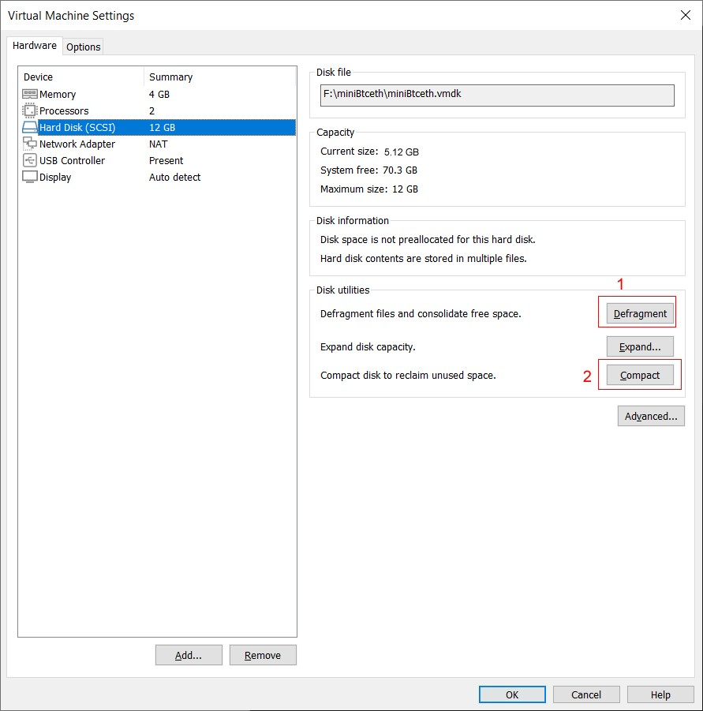
7.2 Disk Immutability
Configure the VM to discard all changes after shutdown:
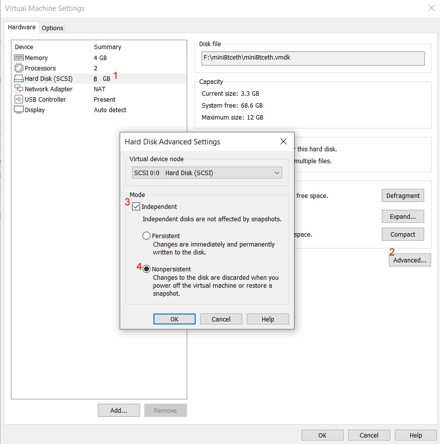
7.3 Boot Encryption
Encrypt the VM disk so copied VMs cannot be started or accessed without the password (use long/complex passwords). This requires entering the password at every VM startup.
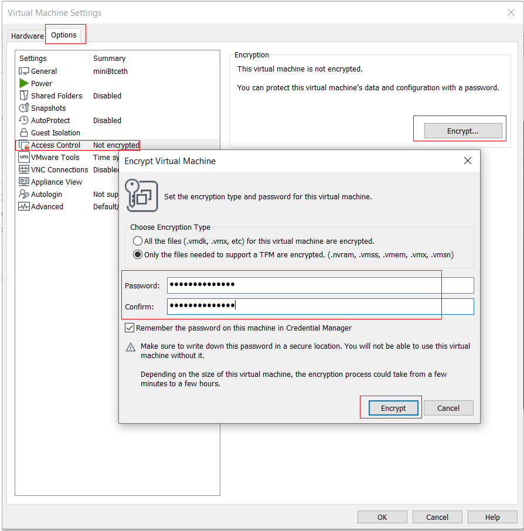
Back up the VM by compressing its host directory (typically under 1GB).
Advanced Environment
Overview
The advanced trading setup employs comprehensive security enhancements: Transactions are signed on a completely air-gapped computer, while signed transactions are broadcast from a separate internet-connected machine. All web browsing and transaction broadcasting routes through the Tor network. In mainland China, Tor access requires VPN tunneling. Thus, we use three computers—or virtual machines (VMs) for equivalent security with greater convenience—each running Debian Linux. The architecture is shown below:
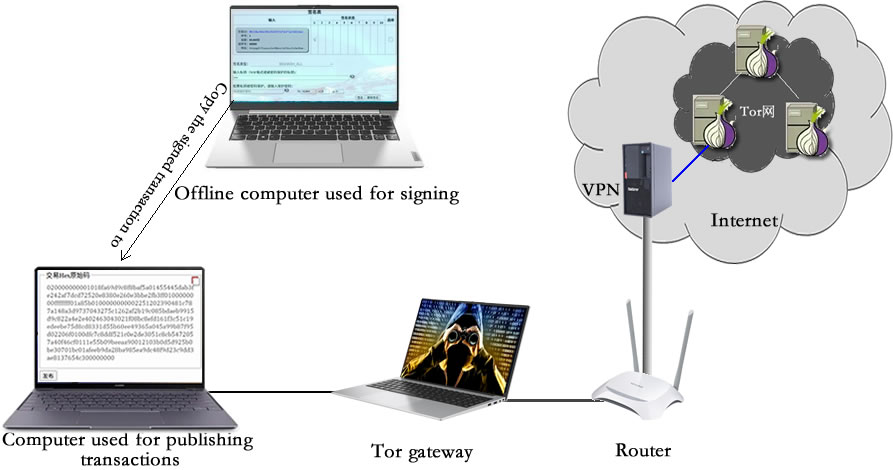
Transactions are created and signed on the offline machine, while UTXO queries, balance checks, and transaction broadcasting occur on the online machine—all traffic routed through the Tor gateway. This gateway establishes an encrypted tunnel to a VPN server, with Tor clients connecting via VPN → Tor entry node → Tor middle node → Tor exit node → Internet. This dual-layer obfuscation enhances anonymity.
We use VirtualBox (open-source) to create three VMs: offline signing machine, transaction broadcasting machine, and Tor gateway.
Detailed Steps
1. Install VirtualBox
Download VirtualBox from https://download.virtualbox.org and install. Then get the Extension Pack (enables disk encryption) from https://download.virtualbox.org and double-click to install. Launch VirtualBox after installation.
2. Import Whonix
We deploy Whonix—a Debian 12-based OS preconfigured with Tor, renowned as the world's most privacy-focused operating system. Download the appropriate OVA file from https://www.whonix.org (e.g., Whonix-Xfce-17.3.9.9.Intel_AMD64.ova). In VirtualBox, press Ctrl+I to import the downloaded Whonix image (see below).
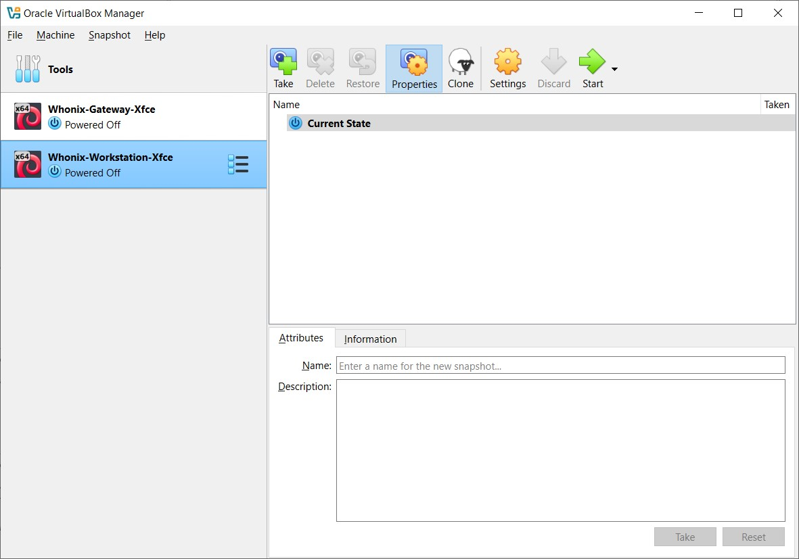
The Whonix-Gateway-XFCE VM serves as the Tor gateway (preconfigured; just launch it). Whonix-Workstation-XFCE is the online workstation—all its internet traffic routes through Tor for activities like broadcasting signed transactions, checking balances, and communications.
3. Tor Gateway Setup
For detailed configuration, refer to Practical Cryptocurrency Security.
4. Online Workstation Prep
For detailed configuration, refer to Practical Cryptocurrency Security.
5. Offline Signing Machine
For detailed configuration, refer to Practical Cryptocurrency Security.
6. VM Backup & Recovery
For detailed configuration, refer to Practical Cryptocurrency Security.
Ultimate Environment
Overview
Two approaches are available:
Option 1: Employ multiple Raspberry Pi devices to
achieve military-grade hardware-level security.
Option 2: Use x86 architecture bare-metal computers
(16GB+ RAM) with Qubes OS installed on USB drives, subsequently configuring Whonix
within Qubes OS.
We implement Option 2: Install Qubes OS on USB drives, then create four qubes within Qubes OS. The first runs Whonix-Gateway as a Tor gateway, the second hosts Whonix-WorkStation as the online workstation, the third installs Debian to store sensitive materials (e.g., private keys) and handles transaction signing—remaining permanently offline. The fourth runs Debian for processing online materials without routing through Tor.
Maintain at least two identical copies of the USB drive.
Detailed Steps
1. Hardware Preparation
(1) Computer: x86 CPU (Intel/AMD), 16GB+ RAM, minimum 32GB storage, with VT-x/VT-d virtualization enabled in BIOS.
(2) USB Drives: Procure two Corsair CMFSS3B-256GB Flash Survivor Stealth 256GB USB 3.0 Flash Drives (waterproof, EMI-shielded, shock-resistant) via Amazon or overseas suppliers.
2. Create Qubes OS Installation Media
Download Qubes-R4.2.4-x86_64.iso from https://mirrors.edge.kernel.org/qubes/iso/Qubes-R4.2.4-x86_64.iso. Obtain the Rufus flashing tool (v4.7) from https://github.com/pbatard/rufus/releases/download/v4.7/rufus-4.7.exe. Follow the operational steps shown in Figure 9-3.
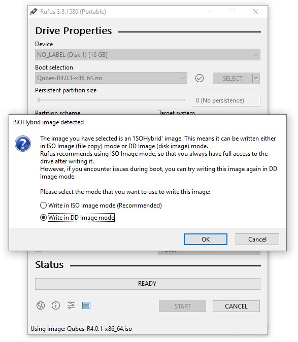
3. Qubes Architecture
The overall architecture is illustrated below.
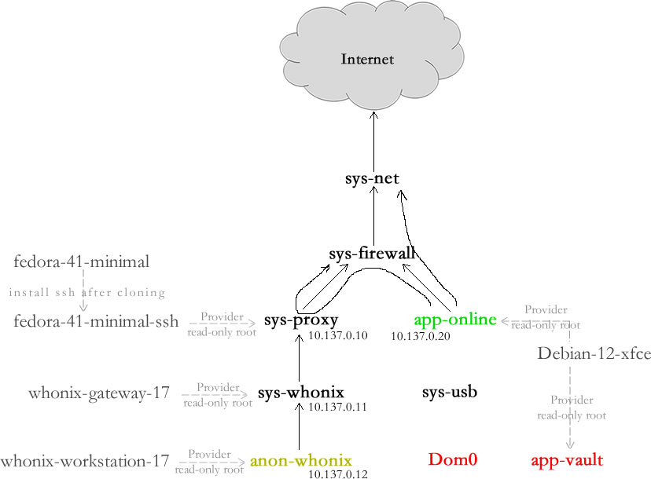
sys-usb manages all USB devices and can be attached to any running VM. The app-online VM handles routine internet tasks with optional VPN or direct connection.
4. Install Qubes OS
For detailed installation procedures, refer to the book "Secure Cryptocurrency Trading in Practice"
5. Create and Configure Qubes
For detailed configuration methods, refer to the book "Secure Cryptocurrency Trading in Practice"
DOWNLOAD
Our GPG key fingerprint is: 823C 41F5 9DF0 64A5 FC40 615B 16E1 4CE7 68C0 F602. Download the signature verification public key from here. We strongly recommend verifying the cryptographic signature of all downloaded resources using these commands:
gpg --import walletoffline_public_key.asc# Import public key
gpg --verify <resource_filename>.sig <resource_filename># Place resource and signature in same directory